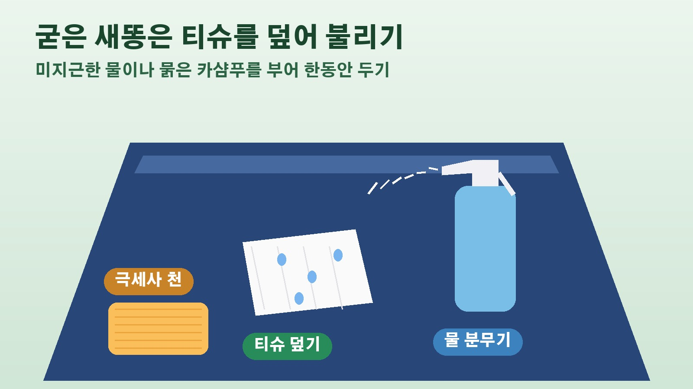

세차 끝낸 차에 떨어진 새똥, 마른 채 문지르면 흠집이 나는 이유와 앞유리에 묻었을 때 와이퍼를 켜면 안 되는 까닭
주말에 큰맘 먹고 세차를 끝냈는데 다음 날 보닛이나 지붕에 새똥이 붙어 있으면 정말 속상하시죠. 얼른 없애고 싶은 마음에 휴지로 쓱 문질러 버리기 쉬운데, 이렇게 하면 오히려 흠집이 남을 수 있다고 합니다. 코리아올썸이 10월 22일 소개한 새똥 제거 방법을 바탕으로, 왜 빨리 지워야 하는지, 어떻게 떼어 내야 도장을 지킬 수 있는지, 달리는 중 앞유리에 떨어졌을 때는 어떻게 해야 하는지 정리해 볼게요.
새똥을 빨리 지워야 하는 이유
새똥에는 알칼리성이나 산성을 띠는 성분이 섞여 있습니다. 그대로 두면 딱딱하게 굳을 뿐 아니라 도장과 고무 부품을 손상시키고, 심하면 지워지지 않는 얼룩으로 남는다고 해요. 특히 햇볕이 강한 날에는 차체 온도가 올라가면서 도장이 부드러워지고 그 틈으로 새똥 성분이 스며들어 손상이 더 빨라집니다. 그래서 발견하는 즉시 없애는 것이 중요합니다. 다만 서두른다고 마른 새똥을 그대로 문지르면 안 됩니다. 새똥 안에 섞인 씨앗이나 모래 같은 단단한 알갱이가 도장을 긁어 흠집을 낼 수 있기 때문이에요.
막 떨어진 새똥은 물로 불려서 떼어 내기
새똥이 묻은 지 얼마 되지 않았다면 물에 적신 티슈로 새똥에 수분을 충분히 머금게 해 부드럽게 만든 다음, 다른 젖은 티슈로 살짝 닦아 내면 됩니다. 물이 없을 때는 자판기에서 생수를 사서 써도 되고, 미리 차에 물을 담은 분무기를 실어 두면 더 편합니다. 분무기 물줄기로 새똥을 문지르지 않고 불어 날리는, 손대지 않고 없애는 효과를 기대할 수 있거든요. 이미 굳어 버린 새똥도 물을 꾸준히 뿌려 주면 부드러워져 떼어 내기가 쉬워집니다.
딱딱하게 굳었다면 티슈를 덮어 불리는 방법
그래도 떨어지지 않을 만큼 굳었다면 팩처럼 덮어 두는 방법을 써 보세요. 새똥 위에 티슈를 덮고 물이나 섭씨 30도에서 40도 정도의 미지근한 물, 또는 묽게 탄 카샴푸를 부어 한동안 불려 두는 방식입니다. 이렇게 하면 단단하게 굳은 새똥도 대부분 부드러워진다고 해요. 이때 빳빳한 종이 타월은 피하는 것이 좋습니다. 특히 마른 상태로 쓰면 도장 표면에 상처를 낼 수 있으니 부드러운 티슈나 극세사 천을 쓰는 편이 안전합니다.

달리다 앞유리에 떨어졌다면 와이퍼는 켜지 말기
가장 조심해야 할 상황은 주행 중 앞유리에 새똥이 떨어졌을 때입니다. 급한 마음에 와이퍼를 켜면 새똥을 끌고 다니면서 오염이 넓게 번지고, 유리와 와이퍼 고무까지 상하게 됩니다. 워셔액을 함께 뿌려도 마찬가지예요. 넓게 번진 새똥은 오히려 시야를 더 가려 위험해질 수 있습니다. 앞을 크게 가릴 정도가 아니라면 당황하지 말고 가까운 안전한 곳에 차를 세운 뒤 앞에서 말씀드린 방법으로 없애는 것이 좋습니다. 기사는 이를 위해 차에 티슈와 물 분무기를 늘 실어 두라고 권하는데요, 이 두 가지만 있으면 앞유리에 붙은 벌레 사체 같은 오염에도 대응할 수 있다고 합니다. 새가 앉기 쉬운 전선 아래나 나무 밑에는 되도록 주차하지 않는 것도 확률을 줄이는 방법입니다.
중성세제 분무기와 에어 블로어, 그리고 평소 코팅
묽게 탄 중성세제를 담은 분무기도 새똥이나 벌레 자국을 지우는 데 효과적입니다. 다만 세제를 썼다면 물만 담은 분무기를 하나 더 준비해 마지막에 세제 성분을 꼼꼼히 헹궈 내야 해요. 세제가 남으면 오히려 도장을 상하게 할 수 있습니다. 시중에 새똥이나 벌레 제거 전용 클리너도 있지만, 발견하자마자 앞의 방법으로 처리하면 대부분 쓸 일이 없다고 합니다. 충전식 소형 에어 블로어를 쓰는 방법도 있는데요, 물을 뿌려 새똥을 불린 뒤 바람으로 날려 버리면 닦을 필요가 없어 도장 부담이 적습니다. 에어 블로어는 세차 뒤 사이드미러 안쪽이나 차체 틈새에 남은 물기를 날려 물때 자국을 막는 데도 쓸모가 있어요. 평소 도장 표면을 코팅해 두면 새똥 성분이 스며드는 것을 줄일 수 있다는 점도 함께 기억해 두시면 좋겠습니다.
참고한 기사: 코리아올썸 함부로 닦다간 지갑 다 털린다, 자동차에 묻은 새똥 안전하게 제거하는 숨은 방법은 2026년 10월 22일
태그
새똥제거 세차 셀프세차 차량관리 도장관리 카샴푸 극세사타월 앞유리관리 에어블로어 차량코팅